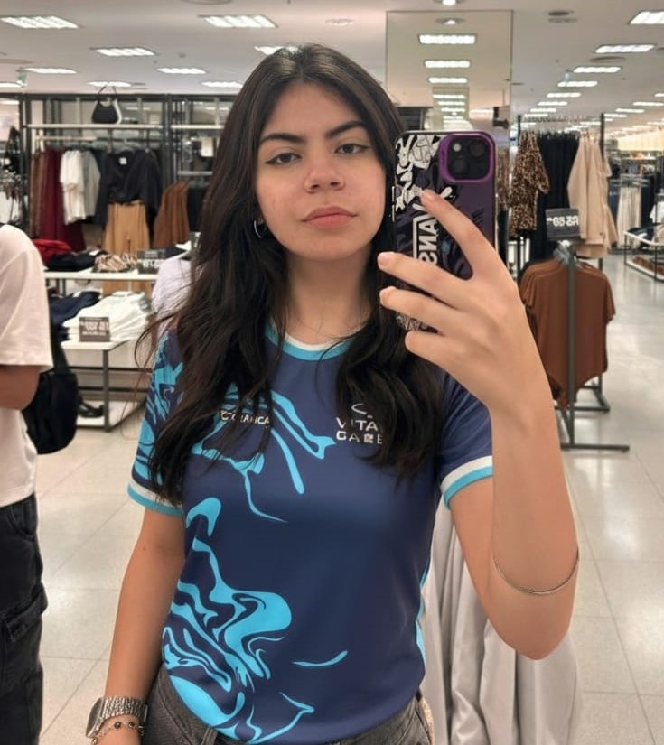

Triagem rápida e inteligente para a porta de entrada do SUS
O VitalCare é um sistema em formato de totem que automatiza o cadastro, coleta sinais vitais e aplica protocolos clínicos de triagem com precisão — reduzindo filas, organizando fluxos e apoiando profissionais.
* Projeto com interface em Python para tela touchscreen e sensores integrados.
Conheça a Equipe
Fernando Meneguini
Eng. Biomédico — desenvolvimento de hardware e integração de sensores.
Guilherme Mendes
Dev. Fullstack — backend, APIs e integração com sistemas.

Laura Rita
Design de Produto — UI/UX e experiência do usuário.
Clique em "Orientadores" para ver orientador e co-orientadora.